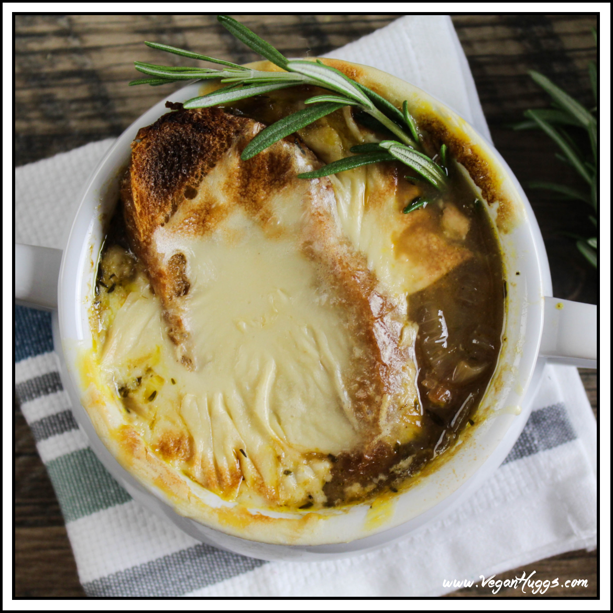

French Onion

Servings: 8 large servings Calories: 497kcal
Soup
- 1/4 cup vegan butter or olive oil (or a blend of both)
- 4 medium yellow onions , sliced
- 3/4 teaspoon granulated sugar
- 4 cloves garlic , minced
- 1 1/2 teaspoons dried thyme
- 3/4 cup red wine
- 3 tablespoons all-purpose flour
- 2 quarts vegetable broth , low sodium
- 2 bay leaves
- 1 1/2 teaspoons sea salt , more to taste
- Fresh ground pepper , to taste
- 1 baguette , sliced and toasted
Mozzarella Cheese
- 1/4 cup raw cashews , soaked in water for 2 hours
- 1 1/4 cup unsweetened plant-based milk , hot
- 2 tablespoons tapioca flour/starch
- 1 tablespoon nutritional yeast
- 2 teaspoons lemon juice
- 1/2 teaspoon garlic powder
- 3/4 teaspoon sea salt
Instructions
- In a large pot, heat the butter or oil over medium-low heat. Add the onions and sugar. Sauté until the onions are very tender & caramelized, about 40-50 minutes. Stir often to avoid sticking or burning.
- Now add the garlic and thyme. Sauté 30-60 seconds.
- Add the red wine and turn heat up to bring to a simmer. Now reduce heat and gently simmer on medium-low for about 10-15 minutes, or until the wine has evaporated.
- Stir the flour into the onions. Turn the heat down to low and cook for 1 minute. Stir constantly so the flour doesn't burn.
- Add the vegetable broth, bay leaves, salt, and pepper. Turn heat up to to get things moving and turn right down to gently simmer for 10-15 minutes.
- Now's a good time to prepare the "mozzarella" cheese. Drain cashews and discard water. Place all ingredients into a blender. Blend on high until smooth. Now pour mixture into a small pot and place over medium heat. Stir often, so it doesn’t stick or burn. Scrape the sides and bottom as needed. The cheese will start to thicken up and get slightly stretchy. This whole process should take about 3-5 minutes. Remove from heat.
- When the soup is done, remove bay leaves and taste for seasoning. Add more if needed.
- Heat the broiler to high. Carefully ladle the soup into oven-safe crocks or bowls. Fill halfway, and place 1-2 slices of toasted baguette into each bowl. Now add more soup, pouring directly over bread. Make sure not to overfill the bowls. Now top each baguette slice with a big scoop of cheese and place the bowls in the oven. I placed a big piece of parchment paper under the bowls. Sometimes the cheese melts over, so it avoids mess in your oven.
- Broil for 2-3 minutes to slightly brown and melt the cheese. Watch carefully to avoid burning.
Nutrition
Serving: 1Bowl | Calories: 323kcal | Carbohydrates: 35g | Protein: 11g | Fat: 13g | Saturated Fat: 7g | Sodium: 577mg | Potassium: 397mg | Fiber: 1g | Sugar: 1g | Vitamin C: 0.7mg | Calcium: 115mg | Iron: 2.8mg